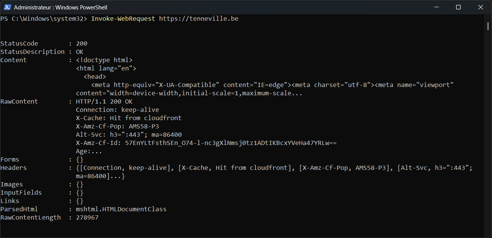

Tutorial – Network / Security
This check verifies that the SSL/TLS certificate used by a website or service is valid, trusted and not expired.
Open PowerShell and run:
Invoke-WebRequest https://your-domain.com
Verify that:

A valid SSL/TLS certificate should return:
StatusCode : 200 StatusDescription : OK
This confirms that: